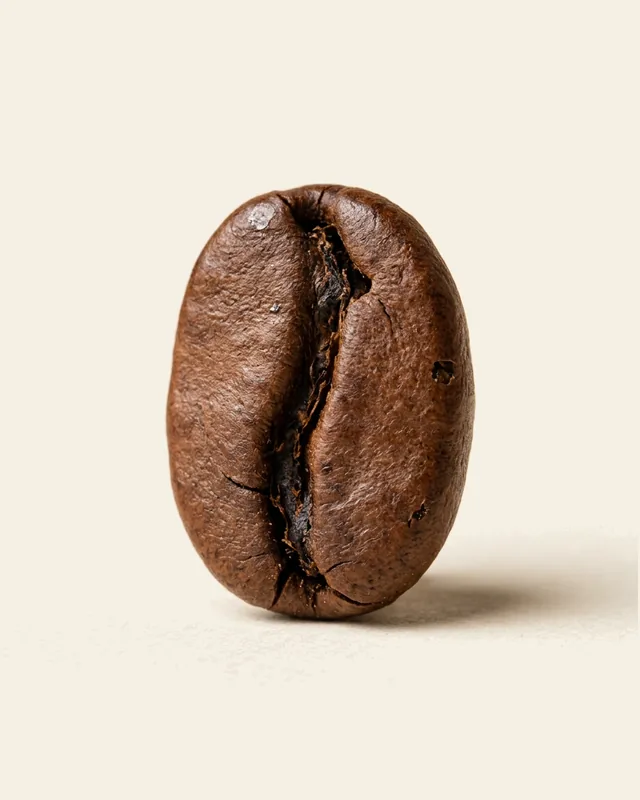
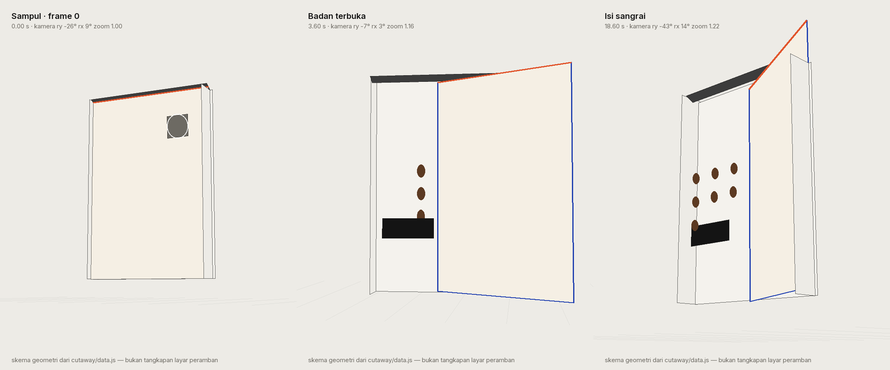
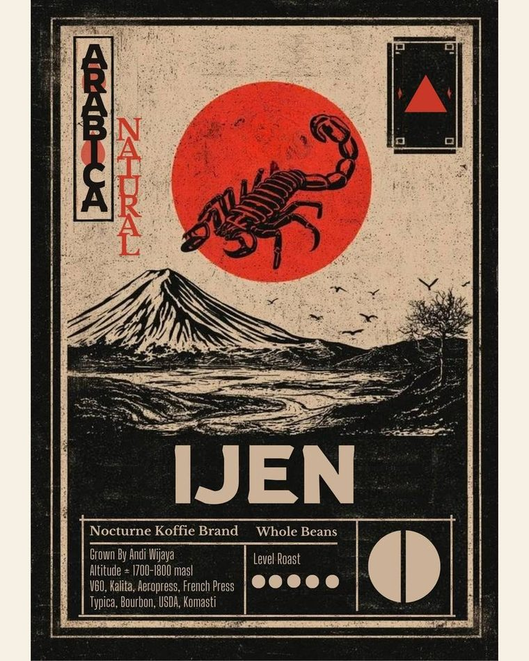
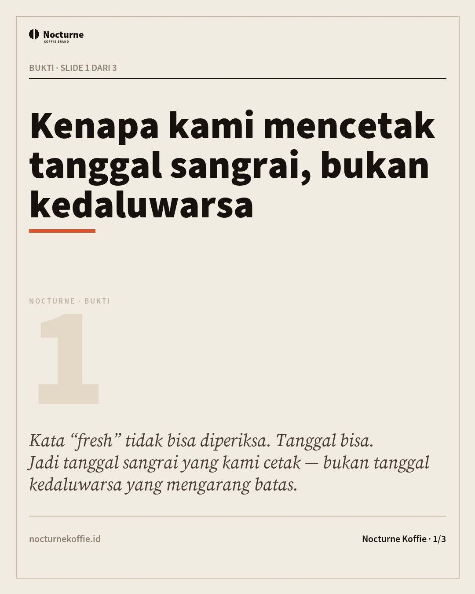
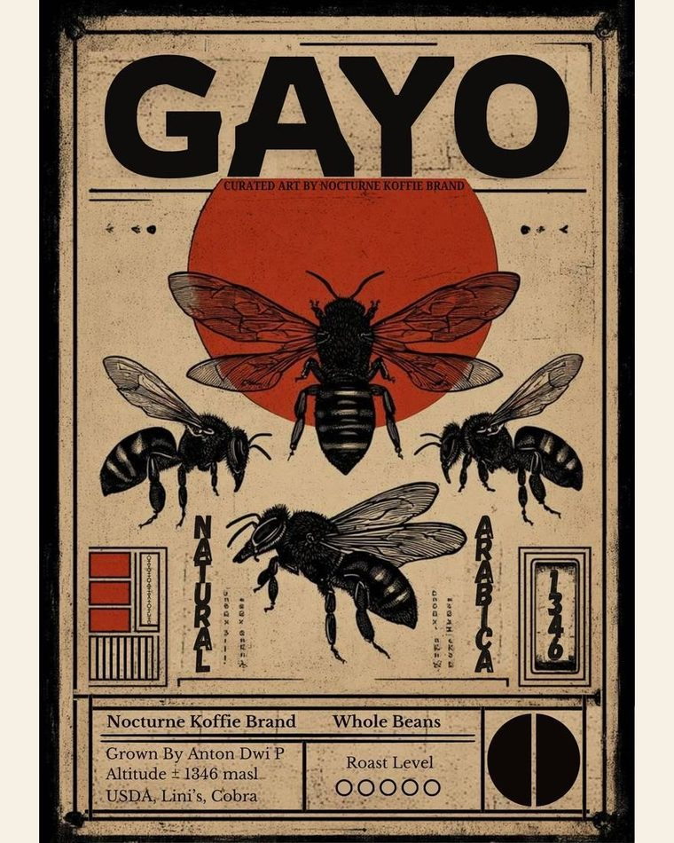

Situs
6 halaman
Situs Beranda Biji kopi render 3D di kiri, motto “Terjaga untuk rasa yang sesungguhnya.” di kanan. Enam titik senyawa bisa diketuk. Buka Situs Rak sangrai Hero rak 3D: dua belas lot berdiri di rak, satu ditarik keluar dan diputar menghadap Anda. Panah, tab, geser, roda, dan kursor kustom. Buka
Situs Potong-buka Kemasan Blue Mount Ijen dibuka bagian demi bagian: 7 bagian, 9 ketukan, satu kamera per bagian. Metode Cutaway (MIT), dibangun dari kode tanpa WebGL. Buka
Situs Biji sangrai Halaman jual roasted beans: 9 biji, tabel harga, tombol WhatsApp per biji, catatan rasa yang bisa digeser. Buka
Situs Landing kampanye Halaman kampanye “kopi yang jujur soal tanggal”, lengkap dengan kode UTM. Buka
Situs Penawaran B2B Harga grosir empat tier untuk kedai, kantor, dan reseller. Buka